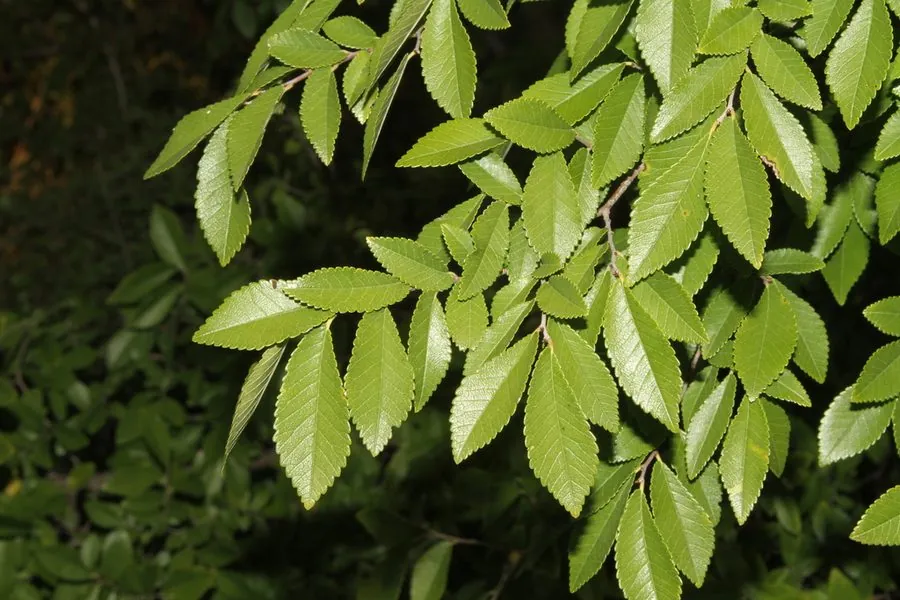

乔木 · 植物界
榔榆 Ulmus parvifolia

榆科榆属落叶乔木，树皮呈斑状剥落、叶小而质厚，秋日开花结果，是制作盆景的优良树种，也常作行道树。
- 分类
- 门被子植物门纲木兰纲目蔷薇目科榆科属榆属
- 栖息环境
- 平原、丘陵与溪边，喜光耐旱、耐瘠薄，适应性强
- 地理分布
- 中国华北、华东、华中、华南及西南各地；日本、朝鲜半岛
- 保护级别
- 暂无评估；未被列入国家重点保护野生植物名录
物种志
榔榆为榆科榆属落叶乔木，高可达二十五米，树皮灰褐色、成不规则鳞片状剥落，剥落后露出红褐色内皮。叶片互生，革质，椭圆形至卵状披针形，较小，边缘具单锯齿，表面深绿有光泽。花簇生于叶腋，两性，花期八至九月；翅果椭圆形，种子位于翅果中央，成熟时黄褐色，果期十月。
榔榆分布于中国华北、华东、华中、华南及西南各地，日本、朝鲜半岛也有，多生于平原、丘陵和溪边。它喜光、耐旱、耐瘠薄，对土壤要求不严，在酸性、中性至微碱性土壤中均能生长，抗风力强。木材坚韧，可供家具、农具和车辆用材；树皮纤维可制绳和造纸；树姿古朴、萌芽力强，是制作树桩盆景的优良材料，也常作行道树和护岸树。
形态与习性
- 株高可达 25 m，树皮斑状剥落
- 花期8–9 月，花簇生叶腋
- 果期10 月，翅果椭圆形
- 光照喜光，稍耐侧阴
- 水分耐旱，也耐短期水湿
- 土壤适应性强，酸碱均可
- 主要用途盆景、行道树，木材制农具
趣味知识
- 榔榆的树皮会像鳞片一样剥落，露出红褐色的内皮，斑驳如豹纹。
- 它秋季开花、深秋结果，与其他春季开花的榆树不同。
- 榔榆萌芽力极强、耐修剪，是岭南盆景和扬派盆景的常用树种。